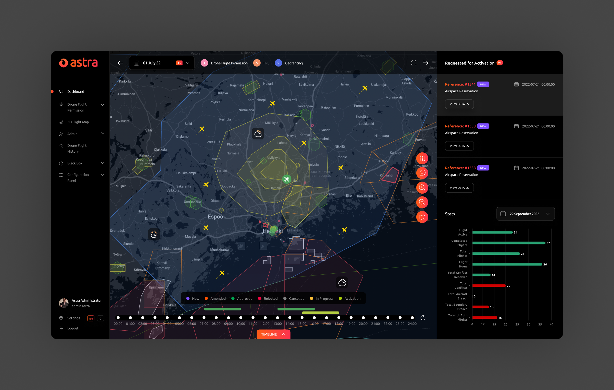
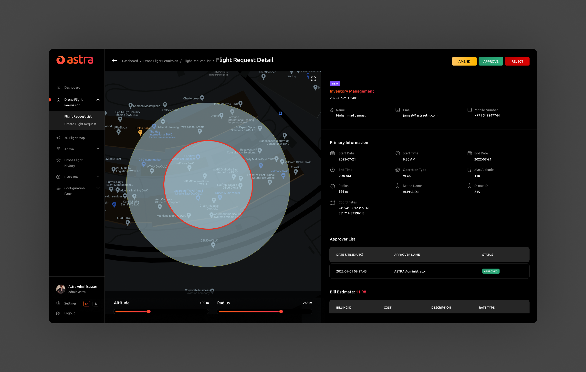

AstraUTM is an advanced full stack UTM system that caters to Authorities, ANSPs, Solution Developers & Drone operators, with tools & applications encompassing all possible UTM workflows.
RoleLead UI/UX Designer
Year2022
Project TypeBrand Identity, Web Design & Mobile App
ToolsFigma, Photoshop, Illustrator

